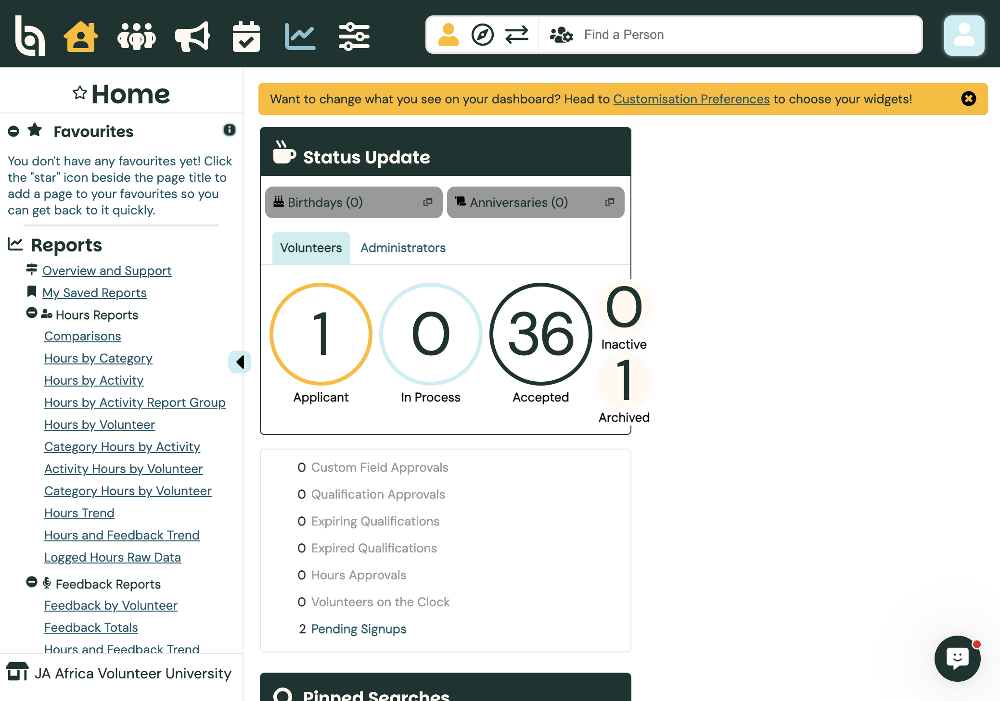
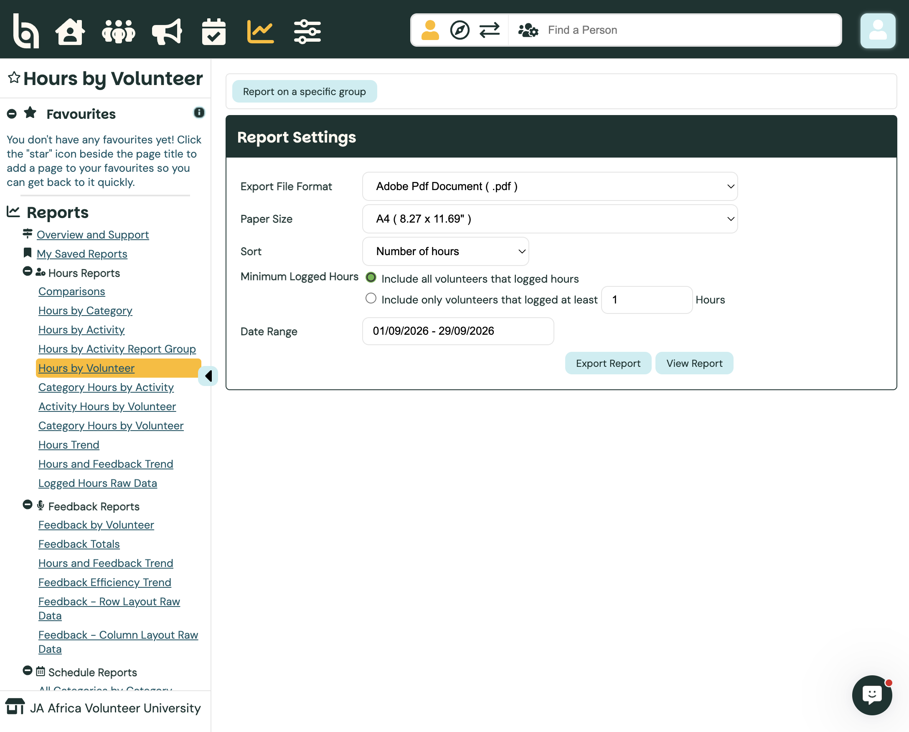
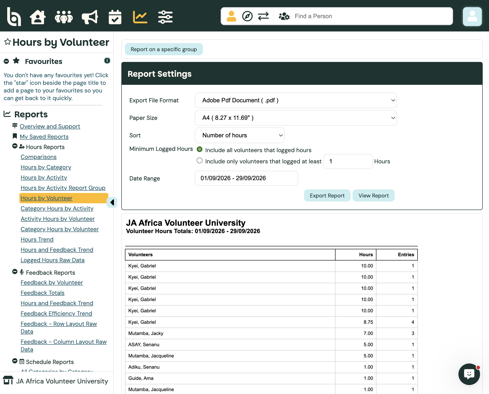
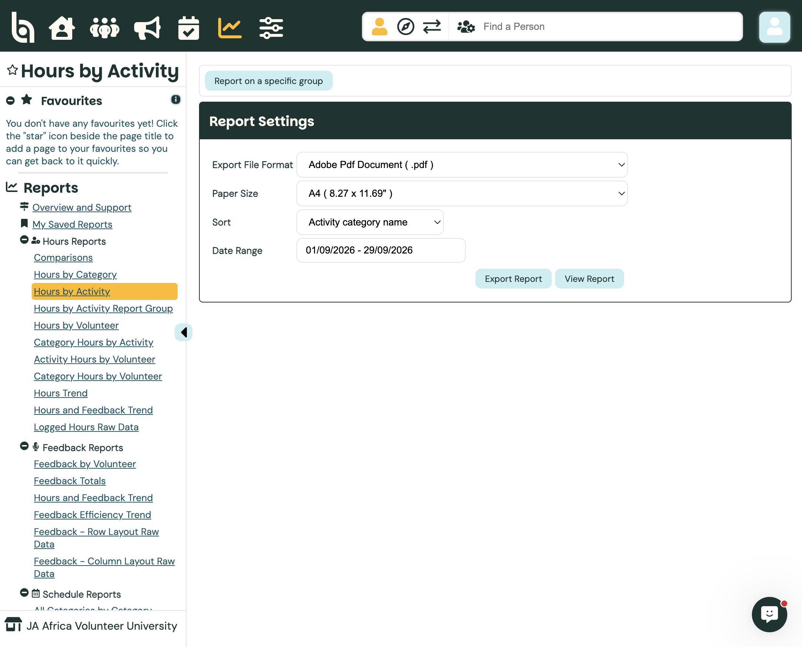
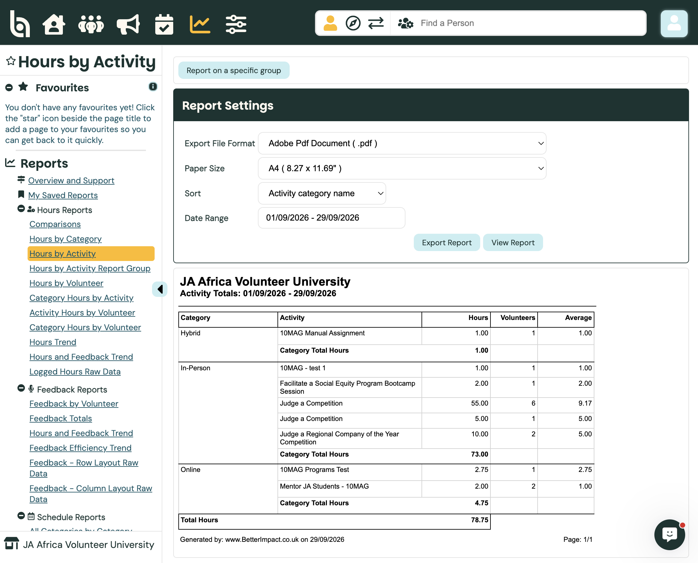
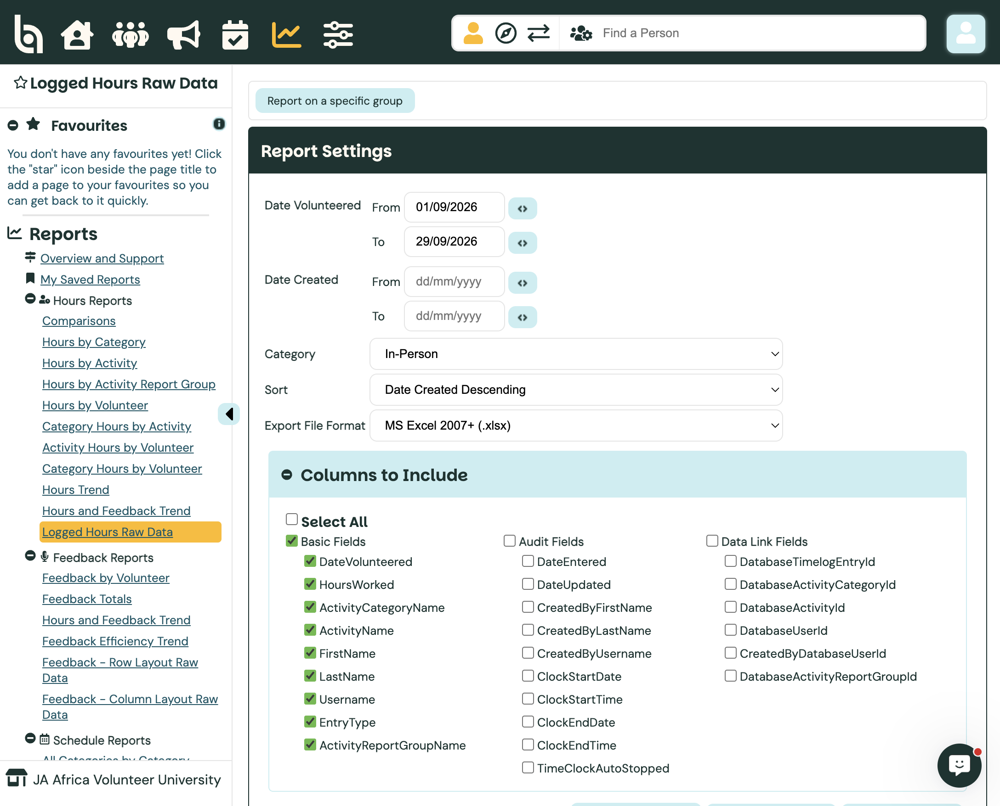
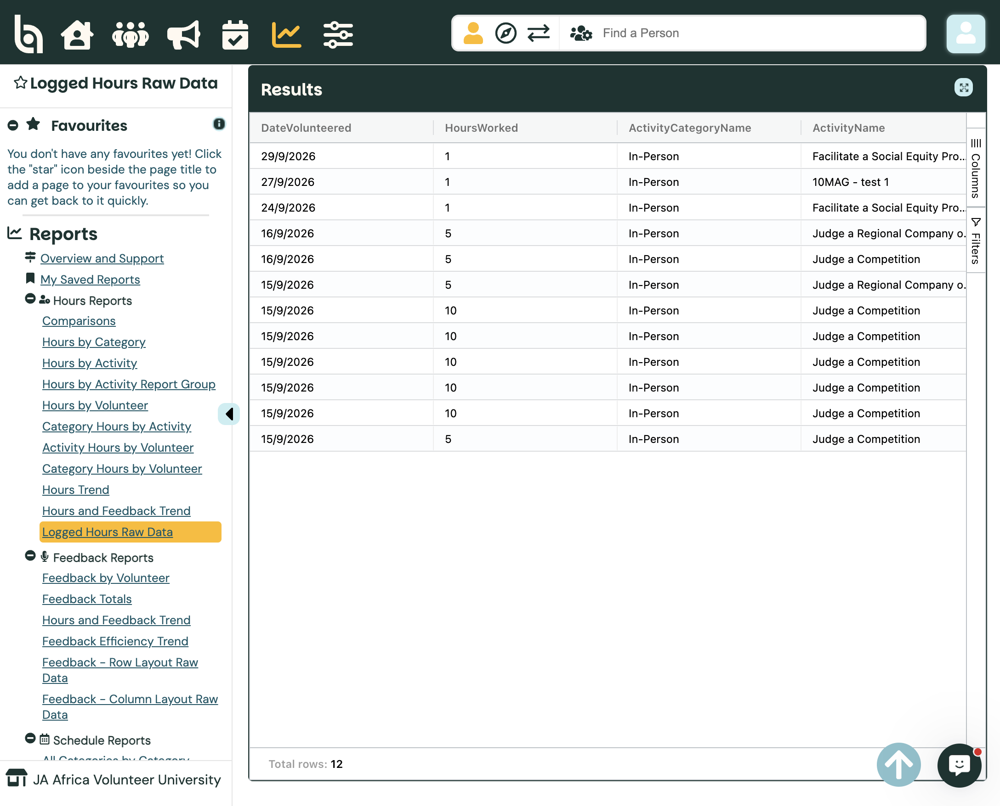
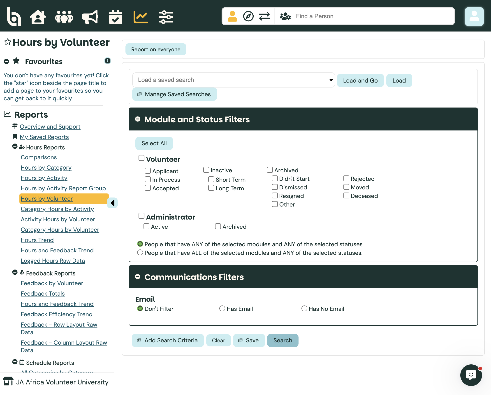

Admin guide
Audience · AdministratorReports — Hours Logged
Use the Reports menu in JA Africa Volunteer University to see hours by volunteer, by activity, or as a detailed raw data export. Set a date range, filter by category or volunteer group, then View on screen or Export to Excel / PDF. Only approved hours appear on reports.
Path: Reports → Hours Reports · Docs: BI comprehensive guide to reporting
Open Hours Reports
Switch into JA Africa Volunteer University. Click the Reports icon in the top bar (chart). In the sidebar under Hours Reports you will see options such as Hours by Volunteer, Hours by Activity, Hours by Category, Activity Hours by Volunteer, and Logged Hours Raw Data.

Hours ReportsJA Africa tip: Day-to-day hour totals are run in the organisation account. Enterprise can also use Hours by Activity Report Group when activities share report groups across countries.
Hours by Volunteer
Choose Hours by Volunteer for totals per person in a date range. Under Report Settings pick Export File Format (PDF, Word, Excel), Sort (Number of hours or Last name), and whether to include everyone who logged hours or only those with at least X hours.
Set the Date Range, then click View Report (on screen) or Export Report (download).

Date rangeThe results list each volunteer with Hours and Entries for that period.

Totals by personHours by Activity
Choose Hours by Activity to see time against each opportunity, grouped by category (Hybrid, In-Person, Online). Sort by category name, activity name, hours, or number of volunteers. Set the date range, then View or Export.

Hours by ActivityResults show Category, Activity, Hours, Volunteers, and Average, plus category and grand totals.

By activityOther useful reports: Activity Hours by Volunteer — who logged on one chosen activity; Category Hours by Volunteer — who logged in one category; Hours by Category — category roll-up with charts.
Logged Hours Raw Data (detailed export)
For line-by-line entries (date, hours, activity, volunteer), open Logged Hours Raw Data. Filter by Date Volunteered and/or Date Created, Category (e.g. In-Person), and Sort. Choose Excel / CSV for export.
Under Columns to Include, tick the fields you need (DateVolunteered, HoursWorked, ActivityName, FirstName, LastName, and so on). Then View Logged Hours or Export Logged Hours.

Filters + columnsOn-screen Results show each entry; use the Columns / Filters tabs on the right to refine the grid further before export.

Entry-level rowsFilter who is included (specific group)
Most hours reports default to everyone. Click Report on a specific group to limit by volunteer status (for example Accepted only), email presence, and extra search criteria (qualifications, date joined, custom fields, and so on).
You can Load a saved search, Add Search Criteria, then Search. Switch back with Report on everyone when you want the full population again.

Status filtersUnapproved hours do not appear in reports — approve pending hours first if totals look low. You can also Save This Report / My Saved Reports to reuse settings.